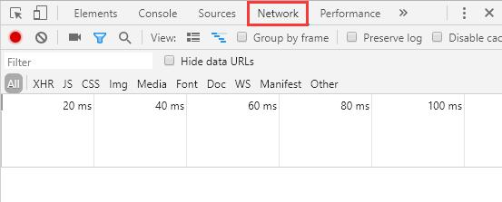
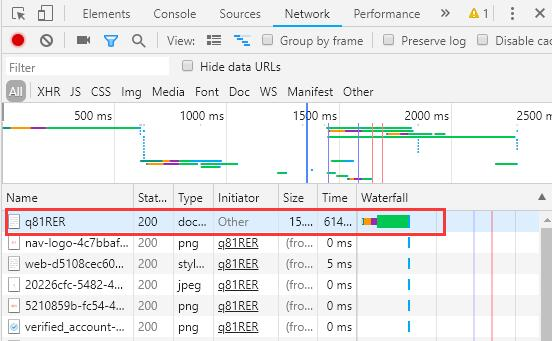
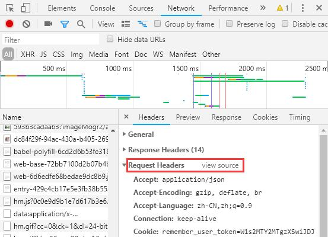
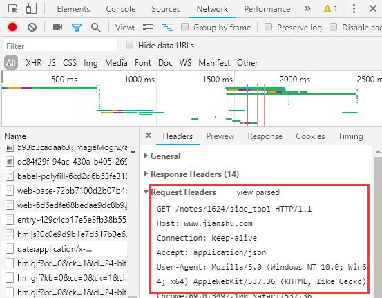
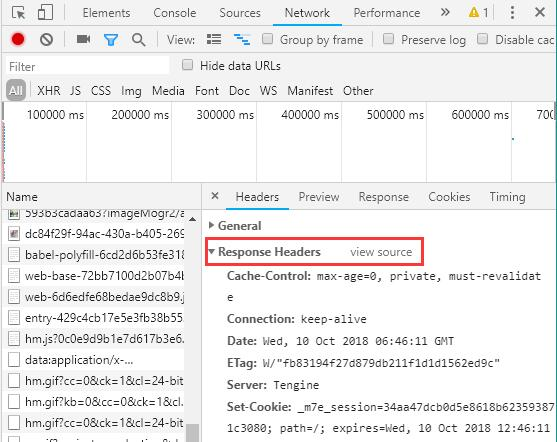
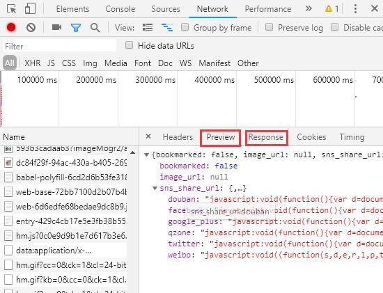

HTTP是什么
HTTP是一个客户端和服务器端请求和应答的标准。
通常，由HTTP客户端发起一个请求，建立一个到服务器指定端口（默认80端口）的TCP连接。HTTP服务器则在那个端口监听客户端发送过来的请求。一旦收到请求，服务器向客户端返回响应的消息，消息的消息体可能是请求的文件、错误消息、或者其它一些信息。
HTTP请求
1 | 格式 |
1 | 内容 |
- 请求最多包含四部分，最少包含三部分（即第四部分可为空）。
- 第三部分永远是换行（\n）
- 动词有 GET POST PUT PATCH DELETE HEAD OPTIONS 等
- 这里的路径包括「查询参数」，但不包括「锚点」
- 如果没有写路径，那么路径默认为 /
- 第 2 部分中的 Content-Type 标注了第 4 部分的格式
HTTP响应
1 | 格式 |
1 | 内容 |
- GET 请求和 POST 请求对应的响应可以一样，也可以不一样
- 响应的第四部分可以很长
HTTP请求方法
| 方法 | 描述 |
|---|---|
| GET | GET方法请求一个指定资源的表示形式。使用GET的请求应该只被用于获取数据 |
| HEAD | 类似于get请求，只不过返回的响应中没有具体的内容，用于获取报头 |
| POST | 向指定资源提交数据进行处理请求（例如提交表单或者上传文件）。数据被包含在请求体中。POST请求可能会导致新的资源的建立和/或已有资源的修改。 |
| PUT | 从客户端向服务器传送的数据取代指定的文档的内容。 |
| DELETE | 请求服务器删除指定的页面。 |
| CONNECT | HTTP/1.1协议中预留给能够将连接改为管道方式的代理服务器。 |
| OPTIONS | 允许客户端查看服务器的性能。 |
| TRACE | 回显服务器收到的请求，主要用于测试或诊断。 |
| PATCH | PATCH方法用于对资源应用部分修改。 |
HTTP Content-Type
用于定义网络文件的类型和网页的编码，决定文件接收方将以什么形式、什么编码读取这个文件。1
2
3
4类型格式：type/subtype(;parameter)?
type 主类型，任意的字符串，如text，如果是*号代表所有
subtype 子类型，任意的字符串，如html，如果是*号代表所有
parameter 可选，一些参数，如Accept请求头的q参数，Content-Type的 charset参数
HTTP状态码
当浏览者访问一个网页时，浏览者的浏览器会向网页所在服务器发出请求。当浏览器接收并显示网页前，此网页所在的服务器会返回一个包含HTTP状态码的信息头（server header）用以响应浏览器的请求。
HTTP状态码的英文为HTTP Status Code。
HTTP状态码分类
| 分类 | 分类描述 |
|---|---|
| 1** | 信息，服务器收到请求，需要请求者继续执行操作 |
| 2** | 成功，操作被成功接收并处理 |
| 3** | 重定向，需要进一步的操作以完成请求 |
| 4** | 客户端错误，请求包含语法错误或无法完成请求 |
| 5** | 服务器错误，服务器在处理请求的过程中发生了错误 |
常见的HTTP状态码：
- 200 - 请求成功
- 301 - 资源（网页等）被永久转移到其它URL
- 404 - 请求的资源（网页等）不存在
- 500 - 内部服务器错误
使用Chrome开发者工具查看HTTP请求/响应内容
- 打开 Network
 - 地址栏输入网址，在 Network 点击想要查看的请求
 - 查看 Request Headers，点击「view source」，可以看到请求的前三部分。如果有请求的第四部分，那么在 FormData 或 Payload 里面可以看到

 - 查看 Response Headers，点击「view source」，可以看到请求的前两部分
 - 查看Response 或者 Preview，可以看到响应的第四部分

curl 命令
cURL是一个利用URL语法在命令行下工作的文件传输工具，1997年首次发行。它支持文件上传和下载，所以是综合传输工具，但按传统，习惯称cURL为下载工具。
请求示例curl -s -v -- "https://www.baidu.com"curl -X POST -d"data=123&key=456" http://localhost:8080/search -v
-s 不显示进度
-v 显示请求详细信息
-X 指定请求方式
-d 指定使用POST方式传递数据
在浏览器输入网址后发生了什么
- 浏览器检查输入的网址缺什么：缺HTTP就自动补全HTTP，缺端口号就添加端口号，即缺什么补什么
- 浏览器向DNS发起询问，询问当前网址的IP
- 得到IP后，浏览器向IP发起请求
- 网址的服务器接收请求，然后根据请求的路径去做处理，最后返回一个html
- 浏览器下载获取到的html，并解析显示，解析的同时还要边解析边找还有没有别的需要请求的，若有，则继续请求。所有请求完后，最后展示给用户完整的网页